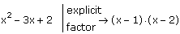

Symbolic Display of Explicit Values Before Reduction |
To replace specified variables in an expression with their assigned values, but without performing any other operations, select the entire expression and either:
- or -
Then press [Enter].
If you want to display explicit values for any variables, you must also type a comma after "explicit," and then type a comma-separated list of those variable(s) in the placeholder.
The explicit command replaces each variable you specify with its assigned value, if it has one, but does not replace any other variables with their values, or perform any other numeric or symbolic operations on the expression.
a:= 30.7
b:= 5.9
d:= 2.36
a + b − d + 13 explicit a,b,d → 30.7 + 5.9 − 2.36 + 13
For any variable in the expression that you omit after "explicit," or that is undefined, Mathcad returns the variable name. For example,
a + b − d + 13 explicit b,d → a + 5.9 − 2.36 + 13
If you do not enter any variables after "explicit," Mathcad returns the original expression unchanged.
If you evaluate a variable that is defined by an expression containing other variables with assigned values, "explicit" substitutes the expression in terms of the variables, not their assigned values. For example, if you define d in the example above to be a + b and then perform the explicit calculation of d,
d:= a + b
d explicit, d → a + b
you get back a + b, rather than 30.7 + 5.9. To return the numerical values, you must request all intermediate names be substituted, that is
d explicit, d, a, b → 30.7 + 5.9
To substitute the evaluated value of d, add a symbolic equal sign after the definition of d, and then perform the explicit calculation.
d := a + b → 36.6
d explicit, d → 36.6
| Suppressing the Value of a Variable |
You can use "explicit" to force Mathcad to temporarily ignore the assigned value of a variable. For example, suppose you have assigned x the value 5 and then try to factor the polynomial x2 - 3x + 2:
x:= 5
x2 − 3x + 2 factor → 22·3
Mathcad first substitutes 5 for x in the polynomial to get 12, and then factors 12 over the integers. If instead you want to factor the polynomial without substituting x = 5, use the keyword "explicit" before "factor" to suppress the value of x in a single symbolic evaluation, as shown in the following example:
